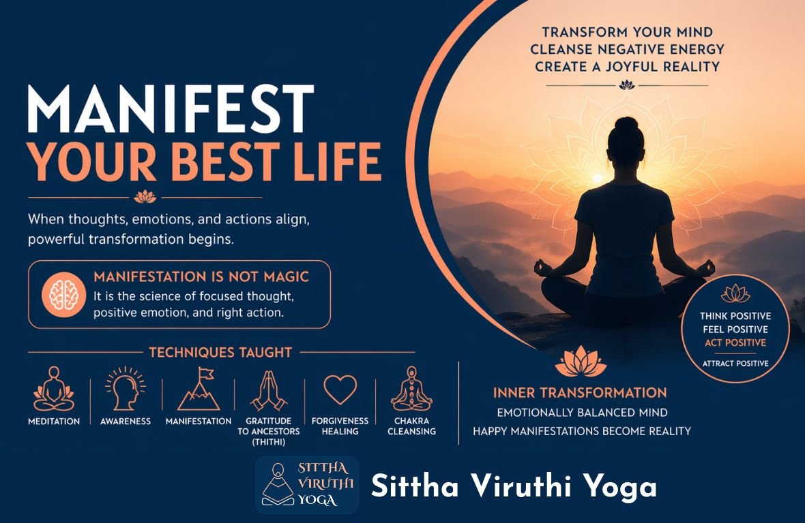

Manifest Your Best Life with Sittha Viruthi Yoga
Manifestation is the sacred practice of turning thoughts, desires, and goals into reality. It happens when you focus your mind, believe in what you want, feel it deeply, and take the right actions.
At its core, manifestation reminds us that the mind is powerful. What we think and feel regularly can shape the direction of our lives.

Why Manifestation Matters Today
We live in a fast-paced world filled with stress, fear, and negativity. Many people feel confused or trapped . Manifestation offers a simple and practical way to regain balance, build positivity, and move forward with clarity and confidence.
How Manifestation Works
Manifestation is based on a simple idea: Thoughts influence reality.
- When you think positively and believe in yourself, you are more motivated and open to opportunities.
- When your mind is filled with fear and doubt, it often leads to hesitation and missed chances.
This idea is often called the Law of Attraction—you tend to attract what you focus on. From a psychological point of view, manifestation works because:
- Clear goals improve focus
- Positive thinking builds confidence
- Belief increases effort and persistence
Manifestation is not just about thinking—it is about feeling and acting.
- Visualization means imagining your goal as if it has already happened.
- Affirmations are positive statements you repeat to build confidence.
These practices help change your mindset from “I don’t have enough” to “I am capable and growing.
When you feel positive emotions like gratitude and joy, you naturally behave in a more confident and open way. This attracts better situations and people into your life. On the other hand, constant fear and doubt can limit your growth and lead to negative outcomes.
Simple Everyday Examples
At Work:If you believe “I can handle this project,” you will work with more confidence and perform better. This increases your chances of success.
In Studies:A student who visualizes success and studies with focus is more likely to achieve good results than one who constantly fears failure.
Health and Fitness:Thinking “I am becoming healthier every day” motivates you to exercise and eat better.
Relationships:When you approach people with positivity and openness, you build stronger and more meaningful connections.
How to Practice Manifestation
1. Be Clear About What You WantDoubtful wishes bring vague results. Define your goals clearly.
2. Feel It as RealDo not just think about your goal—feel the happiness of achieving it.
3. Practice GratitudeBe thankful for what you already have. Gratitude creates a positive mindset.
4. Take ActionManifestation is not just wishing. Act on opportunities with confidence.
5. Let Go and TrustUtilise your resources,take efforts and allow things to unfold naturally without overthinking.
Sittha Viruthi Yoga teaches the power of Manifestation with great clarity and understanding.
Sittha Viruthi Yoga imparts Spiritual Science with deep insight . Knowledge is given on how Karma manifests in different dimensions in shaping life on Earth , helping the participants in understanding the physical body and Energy body with its Energy Centres called Chakras .
Following techniques are taught to gain Positive Energy: Negative Energy is cleansed through the following Techniques :- Forgiveness
- Thithi ( Gratitude to Ancestors)
- Chakra Cleansing (Cleanses Negative Karmas embedded in the Energy Centres)
All the above Sittha Viruthi Yoga techniques brings Inner Transformation . Meditation is very important for stillness of the mind but more important is Manifestation in Meditation. Meditation paves the way for an Emotionally Balanced State of Mind . In such a positive state , Manifestations become a Happy Reality .
When thoughts, emotions, and actions are aligned you can create a powerful path toward the life you want. Manifestation is not magic—it is a way of thinking, feeling, and acting that brings positive change.